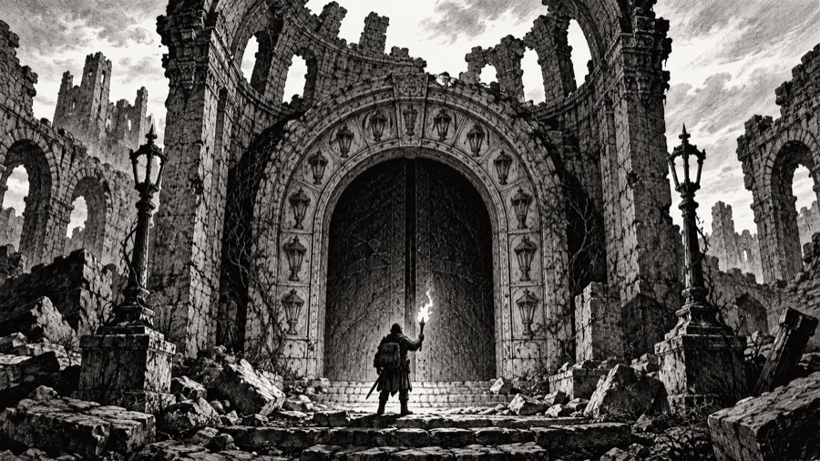

The Lampway: how the dungeon was built

Draft. The dungeon in the game is the Lampway. Its five depth looks (worked stone, moss, crypt, magma, crystal) are its five rings. Things the game already does are given a reason here, marked "In the game".
What it was for
The Lampway was never a mine and never a fortress. It is a cage of light built downward. Caedra and the first Keepers understood one thing about Morrowgloom: it rises wherever it is dark, and it cannot rise through light. So they dug down towards it and lit the way behind them, ring under ring. Each ring is a level of corridors and chambers linked into a circuit of lamp-shrines. While every lamp in a ring burns, the dark below that ring cannot climb past it. Five rings, one above another, held Morrowgloom at the bottom of the world for a thousand years.
The Keepers called it the Lampway. The miners of Lanternhollow, who found only its top, called it the Hollow. Delvers today call all of it the Deep.
How it was built
- Digging. The Stonekin masons of the Deephall clans did the cutting, in the worked-stone style still seen in the top ring: dressed blocks, flagstone floors, proper doors. Cragborn hauled the stone out, and some of the biggest corridors are said to be Cragborn-wide for that reason.
- Lighting. Every chamber the Keepers meant to hold was a shrine with a lamp. Lit rooms are shrines whose lamps still burn after two thousand years, kept going by glow crystal set into their walls. In the game: lit rooms are common near the top and rare deep down, because the lower rings went dark first.
- Hidden ways. Lamplighters needed to reach every shrine without crossing the open halls, so the masons built secret doors and narrow lamplighters' passages behind the walls. In the game: secret doors are commoner the deeper you go, because the lower rings were made for lamplighters, not visitors.
- Locks and seals. Shrine doors were locked against looters. After the Fall, delvers and monsters jammed and barred many of them, which is why so many are stuck.
- Wards. The Keepers and the Collegium set runes in the floors to protect the lamps: fire runes against thieves, wandering runes that sent intruders back to the surface, summoning runes that called guardians. Two thousand years later the runes still work but have forgotten whom to protect. Most other traps (pits, darts, needles, gas vents, loose ceilings, alarm plates) were laid much later by kobolds, goblins, brigands and frightened miners.
- Shifting. No delver ever finds the same passages twice. The Keepers' records say the rings were built to a fixed plan, so the change is new. The usual explanation is that Morrowgloom's hunger pulls the dark parts of the Lampway out of shape, and every time a delver leaves a ring it settles into a new one. In the game: a new level every time you take the stairs.
The mines
The miners of Lanternhollow came two thousand years later, for glow crystals: lamplight that has burned so long in one place that it has set into the stone around it. Glow crystals never go out, which made them the most valuable light in the world.
The miners did not know what they were digging. Every crystal they cut out of a shrine wall took a little light out of the cage. Their tunnels (the upper workings) wind through the Ring of Stone, through the veins of magma and quartz that run between the old halls, and down into the top of the Ring of Roots. In the game: the magma and quartz veins, the gold in the rich ones, rubble in the corridors from the Collapse, and the glow crystal found deep as a light source that never runs out.
In 612 YH, chasing a rich seam, they broke into the Ring of Rest. In 614 YH they brought the lower shafts down behind them (the Collapse). Since 640 YH only licensed delvers go down.
The five rings
The Ring of Stone (50 to 450 ft): worked stone
The top ring and the best-built: Stonekin halls, shrine chambers with pillars, wide stairs. It is also the most crowded, because everything that wants to be near the surface without being on it lives here. Mine tunnels cross and break the old halls everywhere.
- Who lives here: rats and bats, kobolds (Fenwick Gutterking's "kingdom" in the east galleries), goblins, cutthroats and pickpockets who rob delvers on their way down, runaway apprentices from the Collegium, the first skeletons and shamblers, mould and slime in the damp.
- Named: Old Whiskers, King of Rats (150 ft); Fenwick Gutterking (250 ft); Snag the Quick (300 ft); Old Tusk (350 ft); Mother Bristle (450 ft).
- What the Keepers built here: the Hall of First Light, where Caedra lit the first ring. It has never been found again since the shifting began.
The Ring of Roots (500 to 950 ft): moss and water
Below the Ring of Stone, the Keepers' masons met natural caverns, drowned and dripping, where the roots of the Greenroof forest reach down through the rock. They lined the caverns with shrines instead of cutting new halls. The underground river that later flooded the Ring of Rest runs here.
- Who lives here: sporefolk and moulds (memory moss is native here), crabs and crocodiles in the pools, trolls in the wet dark, harpies and goat-men, the first ogres, wolves, and the shades that came up out of the dark when the lower lamps failed.
- Named: Varn the Flayer (500 ft); the Lantern Thief (550 ft); Corvane, Crow of the Deep (600 ft); Sister Vesper (650 ft); Kettlemaw (750 ft); Hollow Jack (850 ft); Grimsby Coldhand (950 ft).
- Legend: the Root Shrine, where the Sylvan say a living tree still grows in the dark, fed by one lamp that has never gone out.
The Ring of Rest (1,000 to 1,450 ft): the crypts
The Keepers' burial ring. Their own dead, and later every Lamp King of Aurenhold, were laid here each with a lamp, as wardens who would guard the rings below even in death. It worked while the lamps burned. When the Oil Tithe was cut and the lamps failed, the dead kept their watch and lost their minds. Now the Ring of Rest is the worst place in the upper Deep: tombs, ossuaries, mortuary chapels, and the river that broke in on the Night the River Rose.
- Who lives here: skeletons, ghouls, mummies and the tomb kings who were the Lamp Kings; ghosts and wraiths; necromancers and their thralls; mimics among the grave goods; gargoyles on the chapel roofs.
- Named: Brakka Stoneteeth (1,050 ft); Ysolde of the Ashes (1,150 ft); the Maul-Wyrm (1,250 ft); the Grey Widow (1,350 ft); Thessaly Glass (1,450 ft).
- Legend: the Tombs of the Lamp Kings, all twenty-six of them, each with its king's lamp. Relighting a king's lamp is said to let him rest, and a rested king's tomb is said to give up its grave goods freely.
The Ring of Forges (1,500 to 1,950 ft): magma
Where the Lampway reaches the deep fires. Under the Pact of the Forge, the Ashborn kept the fires here burning hot and bright as a wall of light, and forged the weapons and lamps the Keepers needed. When Aurenhold fell, the Ashborn forge-folk left, the fires ran wild, and the Ring of Forges became a land of magma, fire spirits and things that like the heat.
- Who lives here: fire giants and fire drakes, magma spirits, ember imps and horned fiends that came up from the Unlit, salamanders, lava crabs, iron and stone golems still working at forges for masters long dead, basilisks.
- Named: Ironjaw (1,550 ft); the Pale Bride (1,650 ft); the Drowned King (1,750 ft); Rimeheart (1,850 ft); the Many-Mouthed (1,950 ft).
- Legend: the Anvil of the Pact, where Embersong was forged. Any blade tempered in its fire, the Ashborn say, will burn until the Gloam itself is ended.
The Ring of Glass (2,000 to 2,450 ft): crystal
The last ring, grown rather than dug: walls of light-holding crystal raised by Tinkerling glassmakers and the first Arcanists, right over Morrowgloom. It was the brightest place in the world, lit by its own walls. When its lamps went out around 960 BH, Morrowgloom started to drink the light stored in the crystal, and it has been drinking ever since. What is left glows a cold, failing blue.
- Who lives here: dragons, liches, vampire lords, crystal golems, star wisps (sparks of starlight caught in the crystal), storm giants, the oldest horrors, and the deepest servants of the dark.
- Named: Skarth the Unsleeping (2,100 ft); the Ember Queen (2,250 ft); Duke Ashvane (2,400 ft).
- Legend: Caedra's Stair, the last stair she walked down. Her lantern was found much higher up, in the Ring of Forges (see the Lantern of the First Keeper in Magic & artifacts), so either she climbed back up or someone carried it.
The Pit of the Gloam (2,500 ft)

At the bottom of the Ring of Glass is a hollow that was never lit, because it was never meant to be entered. Here Morrowgloom, the Lantern-Eater waits, with everything it has eaten shining in its thousand eyes.
The Unlit (below 2,500 ft)
The game's dungeon goes on below Morrowgloom with no limit. The draft calls this the Unlit: the rock under the cage, which the Keepers never reached and never lit. It is where fiends like Duke Ashvane come from, and what lives there was never caged because no one knew it was there. (Open question; see Contents.)
Legends of the Deep
What delvers say is down there. Some of it is even true.
- The Last Lamp. One lamp in the Ring of Glass that never went out. While it burns, Morrowgloom cannot leave the Pit. The Keepers will neither confirm nor deny it.
- The Crown of Aurenhold. Duke Ashvane won it at dice and took it down. Whoever brings it back, the old law says, is king of the Hollowmark.
- The Brassle & Vane vault. Ironjaw still guards it, and it is empty, but no one has ever proved that.
- The Mirror of Queen Tamsin. It showed the rings below. Thessaly Glass is said to be what is left of it, which would mean the mimic sees everything in the Deep.
- The Ember Queen's hoard. Gold from before there were coins, and the last true ember of the First Fire. If the hoard holds it, the Ember Queen is not a monster guarding treasure but a keeper guarding a lamp.
- The way home. Some delvers swear there is a stair in the Ring of Glass that comes out in the Greenroof.
- The thousand eyes. Every light Morrowgloom has eaten is still burning inside it, and among them is Caedra's. Kill it and they all go home. In the game: "the deep grows a little lighter."